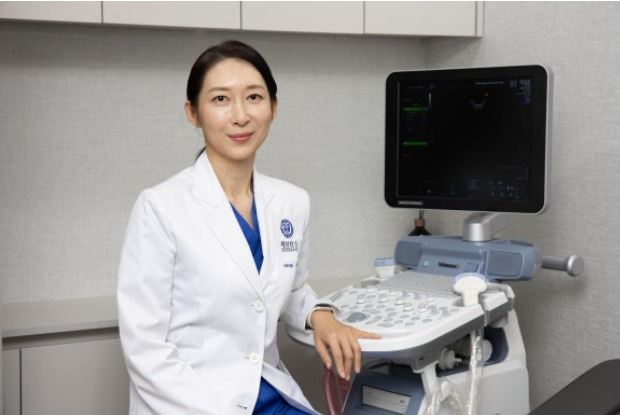

여성검진 · 초음파
생리 주기가 불규칙하거나 하복부가 불편하다면
초음파로 자궁과 난소 상태를 확인해 보세요.

정기적으로 살피는 것이 가장 좋은 관리입니다
초음파 검사는 자궁과 난소의 모양과 크기, 이상 소견을 눈으로 확인할 수 있는 기본적인 검사입니다. 증상이 없어도 정기적으로 확인하면 변화를 일찍 발견하는 데 도움이 됩니다.
검사 결과는 화면을 보며 쉽게 설명해 드립니다.
이런 경우 방문해 보세요
- 생리 주기가 불규칙하거나 생리통이 심해졌다
- 하복부가 자주 아프거나 불편하다
- 생리가 아닌 시기에 출혈이 있다
- 오랫동안 산부인과 검진을 받지 못했다
주로 상담하는 증상
아래 증상 외에도 궁금한 점은 편하게 문의해 주세요.
생리불순 · 생리통
주기가 불규칙하거나 통증이 심한 경우 원인을 확인하고 관리 방법을 안내합니다.
자궁·난소 질환
자궁근종, 난소낭종 등 초음파로 확인되는 질환에 대해 상담합니다.
하복부 통증 · 이상 출혈
생리 기간이 아닌데 출혈이 있거나 하복부가 불편한 경우 원인을 살펴봅니다.
정기 여성검진
증상이 없어도 연령과 상황에 맞는 정기검진 계획을 상담합니다.
본 내용은 일반적인 의학 정보이며 개인의 상태에 따라 진단과 치료가 달라질 수 있습니다. 정확한 진단은 진료를 통해 받으시기 바랍니다.
진료는 이렇게 진행됩니다
상담
증상과 생리 주기, 병력을 확인합니다.
초음파 검사
필요에 따라 질 초음파 또는 복부 초음파를 시행합니다.
결과 설명
화면을 함께 보며 상태를 쉽게 설명해 드립니다.
치료·추적
필요한 치료 계획과 다음 검진 시기를 안내합니다.
자주 묻는 질문
성 경험이 없는 경우 등 개인 상황에 따라 복부(배) 초음파 등 다른 방법을 선택할 수 있습니다. 검사 전에 편하게 말씀해 주세요.
대부분 큰 통증 없이 짧은 시간에 진행됩니다. 불편하시면 언제든 말씀해 주세요.
검사 종류에 따라 생리가 끝난 직후가 더 정확할 수 있습니다. 예약 시 상황을 알려주시면 적절한 시기를 안내해 드립니다.
연령과 병력에 따라 다르지만 증상이 없더라도 정기적으로 산부인과 검진을 받는 것을 권합니다. 개인별 주기는 진료 시 상담해 드립니다.